Tests
50 test(s) passed
28 test(s) failed, 0 others
Steps
589 step(s) passed
38 step(s) failed, 0 others
Tests
-
HomepageHeaderMyIcivicsMisc Jun 22, 2022 12:12:34 PM failJun 22, 2022 12:12:34 PM Jun 22, 2022 12:14:53 PM 0h 2m 19s+0ms
-
C41 -If you are viewing one of the pages in the Sign In/My iCivics submenu, is that page underlined in the submenu?
Jun 22, 2022 09:58:45 PM 0h 21m 49s+448ms failStatus Timestamp Details check_circle 12:13:10 PM myicivics button is clicked and submenu is display 
check_circle 12:13:45 PM Selected page is underlined 
cancel 12:14:19 PM Selected page is not underlined 
check_circle 12:14:52 PM Selected page is underlined 
check_circle 12:14:52 PM The Element MY ICIVICS clicked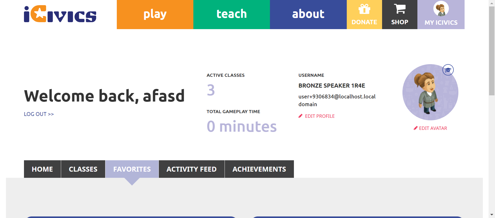 check_circle 12:14:53 PM Myicivics submenu is close on clicking again 
-
-
HomepageHeaderMyIcivicsMisc Jun 22, 2022 01:29:14 PM passJun 22, 2022 01:29:14 PM Jun 22, 2022 01:29:48 PM 0h 0m 34s+0ms
-
C37 - When you select Sign In, do you see links to Sign In, Register As a Student, Register As A Teacher in the submenu?
Jun 22, 2022 09:58:45 PM 0h 21m 49s+458ms passStatus Timestamp Details check_circle 1:29:48 PM myicivics button is clicked and submenu is display 
-
-
HomepageHeaderMyIcivicsMisc Jun 22, 2022 01:38:06 PM passJun 22, 2022 01:38:06 PM Jun 22, 2022 01:38:37 PM 0h 0m 31s+0ms
-
C37 - When you select Sign In, do you see links to Sign In, Register As a Student, Register As A Teacher in the submenu?
Jun 22, 2022 09:58:45 PM 0h 21m 49s+462ms passStatus Timestamp Details check_circle 1:38:37 PM myicivics button is clicked and submenu is display 
-
-
HomepageHeaderMyIcivicsMisc Jun 22, 2022 01:45:26 PM passJun 22, 2022 01:45:26 PM Jun 22, 2022 01:45:59 PM 0h 0m 33s+0ms
-
C37 - When you select Sign In, do you see links to Sign In, Register As a Student, Register As A Teacher in the submenu?
Jun 22, 2022 09:58:45 PM 0h 21m 49s+466ms passStatus Timestamp Details check_circle 1:45:59 PM myicivics button is clicked and submenu is display 
check_circle 1:45:59 PM myicivics submenu count is 3 
check_circle 1:45:59 PM myicivcs submenu is MY ICIVICS 
check_circle 1:45:59 PM myicivcs submenu is MY CLASSES 
check_circle 1:45:59 PM myicivcs submenu is MY FAVORITES 
-
-
HomepageHeaderMyIcivicsMisc Jun 22, 2022 01:47:30 PM failJun 22, 2022 01:47:30 PM Jun 22, 2022 01:55:42 PM 0h 8m 12s+0ms
-
C29 - Can you see an appropriate icon for Donate?
Jun 22, 2022 09:58:45 PM 0h 21m 49s+475ms passStatus Timestamp Details check_circle 1:47:39 PM Donatebutton is displayed 
-
C30 - When you select Donate, are you directed to https://give.icivics.org/?
Jun 22, 2022 09:58:45 PM 0h 21m 49s+476ms passStatus Timestamp Details check_circle 1:47:48 PM Donatebutton is clicked 
check_circle 1:47:59 PM 'Donatebutton is clicked'redirect to corresponding pagehttps://give.icivics.org/q7Mcn0NUdUylSaBbpfwl4w2?_ga=2.11880244.1886389028.1655885865-1686548709.1655885865 
-
C31 - Can you see an appropriate icon for Shop?
Jun 22, 2022 09:58:45 PM 0h 21m 49s+479ms passStatus Timestamp Details check_circle 1:48:06 PM Shopbutton is displayed 
-
C32 - When you select Shop, are you directed to https://icivics.myshopify.com/?
Jun 22, 2022 09:58:45 PM 0h 21m 49s+480ms passStatus Timestamp Details check_circle 1:48:13 PM Shopbutton is clicked 
check_circle 1:48:17 PM 'Shopbutton is clicked'redirect to corresponding pagehttps://icivics.myshopify.com/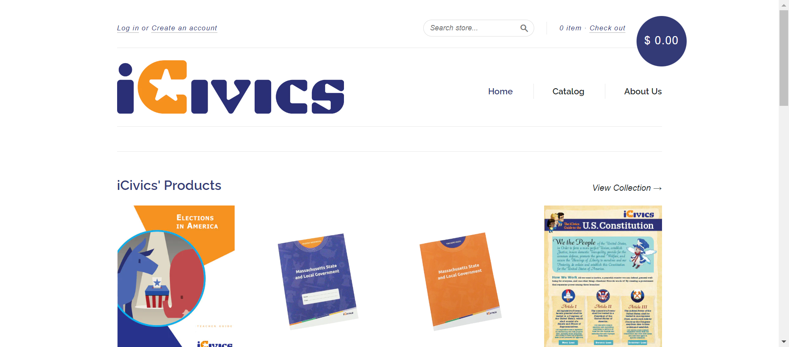 -
C34 - If you are signed in, do you see a My iCivics button instead of Sign In?
Jun 22, 2022 09:58:45 PM 0h 21m 49s+482ms passStatus Timestamp Details check_circle 1:48:47 PM Myicivicsbutton is display after login instead of signin button 
-
C35 - Can you see your avatar icon represented in the button?
Jun 22, 2022 09:58:45 PM 0h 21m 49s+483ms passStatus Timestamp Details check_circle 1:49:19 PM Avatar image is displayed on the button 
-
C35 - Can you see your avatar icon represented in the button?
Jun 22, 2022 09:58:45 PM 0h 21m 49s+484ms passStatus Timestamp Details check_circle 1:49:50 PM My iCivics button has sillouette avatar 
-
C36 - When you select Sign In/My iCivics, does a submenu open below the button?
Jun 22, 2022 09:58:45 PM 0h 21m 49s+485ms passStatus Timestamp Details check_circle 1:50:21 PM myicivics button is clicked and submenu is display 
-
C37 - When you select Sign In, do you see links to Sign In, Register As a Student, Register As A Teacher in the submenu?
Jun 22, 2022 09:58:45 PM 0h 21m 49s+486ms passStatus Timestamp Details check_circle 1:50:50 PM myicivics button is clicked and submenu is display 
check_circle 1:50:50 PM myicivics submenu count is 3 
check_circle 1:50:50 PM myicivcs submenu is MY ICIVICS 
check_circle 1:50:51 PM myicivcs submenu is MY CLASSES 
check_circle 1:50:51 PM myicivcs submenu is MY FAVORITES 
-
C39 -When you select a link in the submenu, are you navigated to the appropriate page?
Jun 22, 2022 09:58:45 PM 0h 21m 49s+491ms passStatus Timestamp Details check_circle 1:51:41 PM The mouse over by xpath : (//a[@title='MY ICIVICS'])[2] is performed. check_circle 1:51:42 PM The element [[ChromeDriver: chrome on WINDOWS (d967fa8cb8c12ab333bfbc6cfaaebb68)] -> xpath: (//a[@title='My iCivics'])[2]] is visible 
check_circle 1:51:42 PM The expected text contains the actual MY ICIVICS 
check_circle 1:52:07 PM The Element MY ICIVICS clicked 
check_circle 1:52:08 PM The expected https://staging.d9.icivics.org/user/9306834 url as same as the https://staging.d9.icivics.org/user/9306834 actual url. 
check_circle 1:52:08 PM The expected text contains the actual Welcome back, 
check_circle 1:52:08 PM The mouse over by xpath : (//a[@title='MY ICIVICS'])[2] is performed. 
check_circle 1:52:08 PM The element [[ChromeDriver: chrome on WINDOWS (d967fa8cb8c12ab333bfbc6cfaaebb68)] -> xpath: (//a[@title='My Classes'])[2]] is visible 
check_circle 1:52:08 PM The expected text contains the actual MY CLASSES 
check_circle 1:52:33 PM The Element MY CLASSES clicked 
check_circle 1:52:33 PM The expected https://staging.d9.icivics.org/classes url as same as the https://staging.d9.icivics.org/classes actual url. 
check_circle 1:52:33 PM The expected text contains the actual SYNC CLASSROOM CLASSES 
check_circle 1:52:34 PM The mouse over by xpath : (//a[@title='MY ICIVICS'])[2] is performed. 
check_circle 1:52:34 PM The element [[ChromeDriver: chrome on WINDOWS (d967fa8cb8c12ab333bfbc6cfaaebb68)] -> xpath: (//a[@title='My Favorites'])[2]] is visible 
check_circle 1:52:34 PM The expected text contains the actual MY FAVORITES 
check_circle 1:52:57 PM The Element MY FAVORITES clicked 
check_circle 1:52:57 PM The expected https://staging.d9.icivics.org/favorites url as same as the https://staging.d9.icivics.org/favorites actual url. 
check_circle 1:52:58 PM The expected text contains the actual Lessons from Antiquity 
-
C41 -If you are viewing one of the pages in the Sign In/My iCivics submenu, is that page underlined in the submenu?
Jun 22, 2022 09:58:45 PM 0h 21m 49s+498ms failStatus Timestamp Details check_circle 1:53:28 PM myicivics button is clicked and submenu is display 
check_circle 1:54:03 PM Selected page is underlined 
cancel 1:54:38 PM Selected page is not underlined 
check_circle 1:55:11 PM Selected page is underlined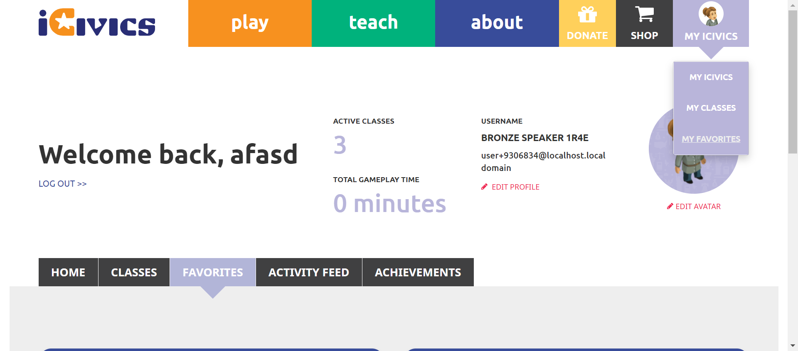 check_circle 1:55:11 PM The Element MY ICIVICS clicked 
check_circle 1:55:11 PM Myicivics submenu is close on clicking again 
-
C42 - When you select Sign In / My iCivics again while the submenu is open, does the submenu close?
Jun 22, 2022 09:58:45 PM 0h 21m 49s+501ms passStatus Timestamp Details check_circle 1:55:42 PM The Element MY ICIVICS clicked 
check_circle 1:55:42 PM Myicivics submenu is close on clicking again 
-
-
HomepageHeaderplay Jun 22, 2022 03:53:48 PM failJun 22, 2022 03:53:48 PM Jun 22, 2022 03:54:36 PM 0h 0m 48s+0ms
-
C41 - If you are viewing one of the pages in the Sign In/My iCivics submenu, is that page underlined in the submenu?
Jun 22, 2022 09:58:45 PM 0h 21m 49s+507ms failStatus Timestamp Details check_circle 3:54:01 PM Signinbutton is displayed 
check_circle 3:54:10 PM The Element SIGN IN clicked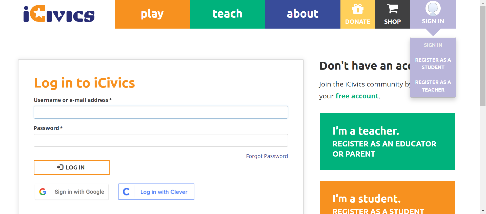 check_circle 3:54:13 PM Selected page is underlined 
check_circle 3:54:21 PM The Element SIGN IN clicked cancel 3:54:25 PM Selected page is not underlined 
check_circle 3:54:33 PM The Element SIGN IN clicked check_circle 3:54:36 PM Selected page is underlined 
check_circle 3:54:36 PM signin submenu is close after clicking again
-
-
HomepageHeaderplay Jun 22, 2022 03:58:16 PM failJun 22, 2022 03:58:16 PM Jun 22, 2022 03:59:03 PM 0h 0m 47s+0ms
-
C41 - If you are viewing one of the pages in the Sign In/My iCivics submenu, is that page underlined in the submenu?
Jun 22, 2022 09:58:45 PM 0h 21m 49s+513ms failStatus Timestamp Details check_circle 3:58:28 PM Signinbutton is displayed 
check_circle 3:58:39 PM Selected page is underlined 
cancel 3:58:51 PM Selected page is not underlined check_circle 3:59:03 PM Selected page is underlined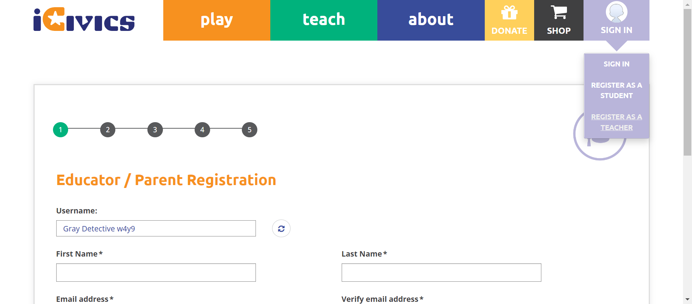 check_circle 3:59:03 PM signin submenu is close after clicking again
-
-
HomepageHeaderplay Jun 22, 2022 04:02:39 PM passJun 22, 2022 04:02:39 PM Jun 22, 2022 04:02:53 PM 0h 0m 14s+0ms
-
C37 - When you select Sign In, do you see links to Sign In, Register As a Student, Register As A Teacher in the submenu?
Jun 22, 2022 09:58:45 PM 0h 21m 49s+518ms passStatus Timestamp Details check_circle 4:02:51 PM signinbutton is clicked and submenu is displayed 
check_circle 4:02:52 PM signinbutton submenu count is 3 
check_circle 4:02:52 PM signinbutton submenu is SIGN IN 
check_circle 4:02:53 PM signinbutton submenu is REGISTER AS A STUDENT 
check_circle 4:02:53 PM signinbutton submenu is REGISTER AS A TEACHER 
-
-
HomepageHeaderplay Jun 22, 2022 04:03:30 PM failJun 22, 2022 04:03:30 PM Jun 22, 2022 04:06:36 PM 0h 3m 6s+0ms
-
C29 - Can you see an appropriate icon for Donate?
Jun 22, 2022 09:58:45 PM 0h 21m 49s+528ms passStatus Timestamp Details check_circle 4:03:39 PM Donatebutton is displayed 
-
C30 - When you select Donate, are you directed to https://give.icivics.org/?
Jun 22, 2022 09:58:45 PM 0h 21m 49s+529ms passStatus Timestamp Details check_circle 4:03:49 PM Donatebutton is clicked 
check_circle 4:04:01 PM 'Donatebutton is clicked'redirect to corresponding pagehttps://give.icivics.org/q7Mcn0NUdUylSaBbpfwl4w2?_ga=2.143686773.1791910166.1655894026-445566915.1655894026 
-
C31 - Can you see an appropriate icon for Shop?
Jun 22, 2022 09:58:45 PM 0h 21m 49s+530ms passStatus Timestamp Details check_circle 4:04:11 PM Shopbutton is displayed 
-
C32 - When you select Shop, are you directed to https://icivics.myshopify.com/?
Jun 22, 2022 09:58:45 PM 0h 21m 49s+531ms passStatus Timestamp Details check_circle 4:04:41 PM Shopbutton is clicked 
check_circle 4:04:45 PM 'Shopbutton is clicked'redirect to corresponding pagehttps://icivics.myshopify.com/ 
-
C33 - If you are not signed in, do you see a Sign In button instead of My iCivics?
Jun 22, 2022 09:58:45 PM 0h 21m 49s+533ms passStatus Timestamp Details check_circle 4:04:52 PM Signinbutton is displayed 
-
C37 - When you select Sign In, do you see links to Sign In, Register As a Student, Register As A Teacher in the submenu?
Jun 22, 2022 09:58:45 PM 0h 21m 49s+534ms passStatus Timestamp Details check_circle 4:04:59 PM signinbutton is clicked and submenu is displayed 
check_circle 4:04:59 PM signinbutton submenu count is 3 
check_circle 4:05:00 PM signinbutton submenu is SIGN IN 
check_circle 4:05:00 PM signinbutton submenu is REGISTER AS A STUDENT 
check_circle 4:05:00 PM signinbutton submenu is REGISTER AS A TEACHER 
-
C38 - If not signed in and you select a link in the submenu, are you navigated to the appropriate page?
Jun 22, 2022 09:58:45 PM 0h 21m 49s+535ms passStatus Timestamp Details check_circle 4:05:12 PM The mouse over by xpath : (//a[@title='Sign In']//span)[3] is performed. 
check_circle 4:05:12 PM The element [[ChromeDriver: chrome on WINDOWS (ff1d812d4daccfc78c3b3cfa154a610b)] -> xpath: (//a[@title='Sign In'])[4]] is visible 
check_circle 4:05:13 PM The expected text contains the actual SIGN IN 
check_circle 4:05:15 PM The Element SIGN IN clicked 
check_circle 4:05:15 PM The expected https://staging.d9.icivics.org/user/login url as same as the https://staging.d9.icivics.org/user/login actual url. 
check_circle 4:05:15 PM The expected text contains the actual Log in to iCivics 
check_circle 4:05:15 PM The mouse over by xpath : (//a[@title='Sign In']//span)[3] is performed. 
check_circle 4:05:16 PM The element [[ChromeDriver: chrome on WINDOWS (ff1d812d4daccfc78c3b3cfa154a610b)] -> xpath: (//li[@class='register as a student']/a)[2]] is visible 
check_circle 4:05:16 PM The expected text contains the actual REGISTER AS A STUDENT 
check_circle 4:05:20 PM The Element REGISTER AS A STUDENT clicked 
check_circle 4:05:20 PM The expected https://staging.d9.icivics.org/user/register?role=student&email=1 url as same as the https://staging.d9.icivics.org/user/register?role=student&email=1 actual url. 
check_circle 4:05:20 PM The expected text contains the actual Student Registration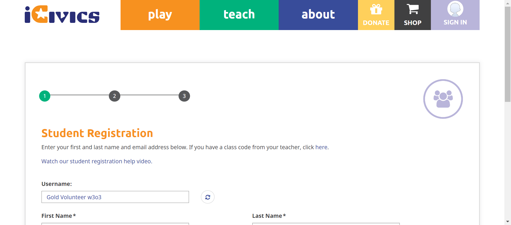 check_circle 4:05:20 PM The mouse over by xpath : (//a[@title='Sign In']//span)[3] is performed. check_circle 4:05:20 PM The element [[ChromeDriver: chrome on WINDOWS (ff1d812d4daccfc78c3b3cfa154a610b)] -> xpath: (//li[@class='active active-trail last register as a teacher']/a)[2]] is visible 
check_circle 4:05:20 PM The expected text contains the actual REGISTER AS A TEACHER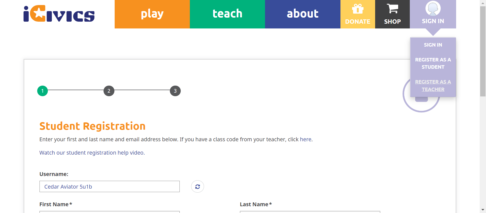 check_circle 4:05:24 PM The Element REGISTER AS A TEACHER clicked 
check_circle 4:05:24 PM The expected https://staging.d9.icivics.org/user/register?role=teacher url as same as the https://staging.d9.icivics.org/user/register?role=teacher actual url. 
check_circle 4:05:24 PM The expected text contains the actual Educator / Parent Registration -
C41 - If you are viewing one of the pages in the Sign In/My iCivics submenu, is that page underlined in the submenu?
Jun 22, 2022 09:58:45 PM 0h 21m 49s+542ms failStatus Timestamp Details check_circle 4:05:32 PM Signinbutton is displayed 
check_circle 4:05:42 PM Selected page is underlined 
cancel 4:05:54 PM Selected page is not underlined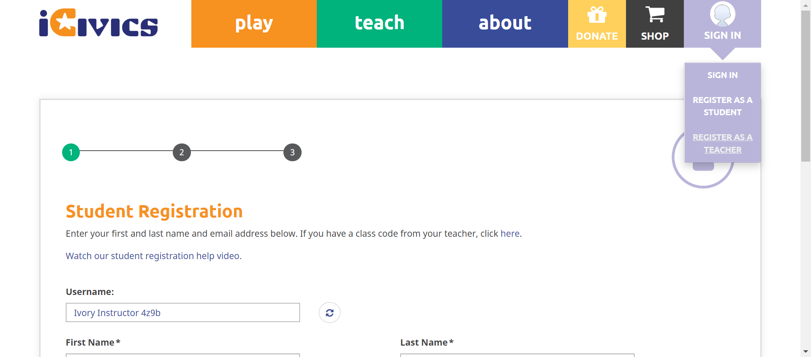 check_circle 4:06:06 PM Selected page is underlined check_circle 4:06:06 PM signin submenu is close after clicking again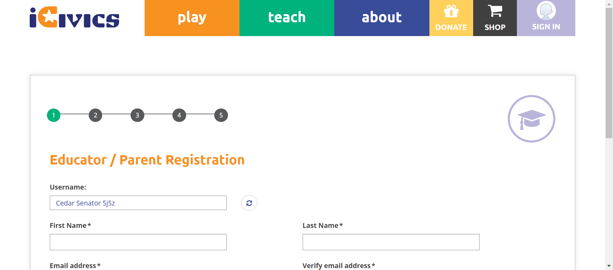 -
C42 - When you select Sign In / My iCivics again while the submenu is open, does the submenu close?
Jun 22, 2022 09:58:45 PM 0h 21m 49s+544ms passStatus Timestamp Details check_circle 4:06:36 PM signin submenu is close after clicking again 
-
-
HomepageHeadermysigninmisc Jun 22, 2022 04:09:37 PM failJun 22, 2022 04:09:37 PM Jun 22, 2022 04:12:27 PM 0h 2m 50s+0ms
-
C29 - Can you see an appropriate icon for Donate?
Jun 22, 2022 09:58:45 PM 0h 21m 49s+549ms passStatus Timestamp Details check_circle 4:09:46 PM Donatebutton is displayed -
C30 - When you select Donate, are you directed to https://give.icivics.org/?
Jun 22, 2022 09:58:45 PM 0h 21m 49s+550ms passStatus Timestamp Details check_circle 4:09:56 PM Donatebutton is clicked 
check_circle 4:10:13 PM 'Donatebutton is clicked'redirect to corresponding pagehttps://give.icivics.org/q7Mcn0NUdUylSaBbpfwl4w2?_ga=2.63965228.2089800518.1655894394-807423496.1655894393 
-
C31 - Can you see an appropriate icon for Shop?
Jun 22, 2022 09:58:45 PM 0h 21m 49s+551ms passStatus Timestamp Details check_circle 4:10:22 PM Shopbutton is displayed 
-
C32 - When you select Shop, are you directed to https://icivics.myshopify.com/?
Jun 22, 2022 09:58:45 PM 0h 21m 49s+551ms passStatus Timestamp Details check_circle 4:10:51 PM Shopbutton is clicked 
check_circle 4:10:55 PM 'Shopbutton is clicked'redirect to corresponding pagehttps://icivics.myshopify.com/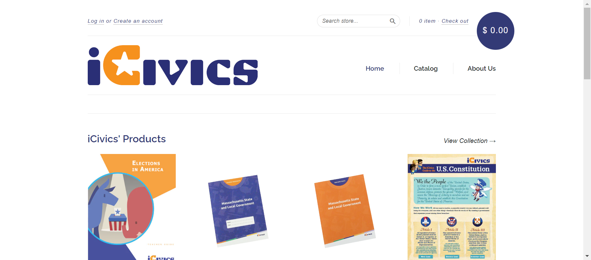 -
C33 - If you are not signed in, do you see a Sign In button instead of My iCivics?
Jun 22, 2022 09:58:45 PM 0h 21m 49s+552ms passStatus Timestamp Details check_circle 4:11:03 PM Signinbutton is displayed -
C37 - When you select Sign In, do you see links to Sign In, Register As a Student, Register As A Teacher in the submenu?
Jun 22, 2022 09:58:45 PM 0h 21m 49s+553ms passStatus Timestamp Details check_circle 4:11:12 PM signinbutton is clicked and submenu is displayed check_circle 4:11:12 PM signinbutton submenu count is 3 
check_circle 4:11:12 PM signinbutton submenu is SIGN IN 
check_circle 4:11:13 PM signinbutton submenu is REGISTER AS A STUDENT 
check_circle 4:11:13 PM signinbutton submenu is REGISTER AS A TEACHER 
-
C38 - If not signed in and you select a link in the submenu, are you navigated to the appropriate page?
Jun 22, 2022 09:58:45 PM 0h 21m 49s+557ms passStatus Timestamp Details check_circle 4:11:22 PM The mouse over by xpath : (//a[@title='Sign In']//span)[3] is performed. 
check_circle 4:11:22 PM The element [[ChromeDriver: chrome on WINDOWS (e9921b4681d2b588a3faa01b620456ea)] -> xpath: (//a[@title='Sign In'])[4]] is visible 
check_circle 4:11:22 PM The expected text contains the actual SIGN IN 
check_circle 4:11:25 PM The Element SIGN IN clicked 
check_circle 4:11:25 PM The expected https://staging.d9.icivics.org/user/login url as same as the https://staging.d9.icivics.org/user/login actual url. 
check_circle 4:11:25 PM The expected text contains the actual Log in to iCivics 
check_circle 4:11:26 PM The mouse over by xpath : (//a[@title='Sign In']//span)[3] is performed. 
check_circle 4:11:26 PM The element [[ChromeDriver: chrome on WINDOWS (e9921b4681d2b588a3faa01b620456ea)] -> xpath: (//li[@class='register as a student']/a)[2]] is visible 
check_circle 4:11:26 PM The expected text contains the actual REGISTER AS A STUDENT 
check_circle 4:11:29 PM The Element REGISTER AS A STUDENT clicked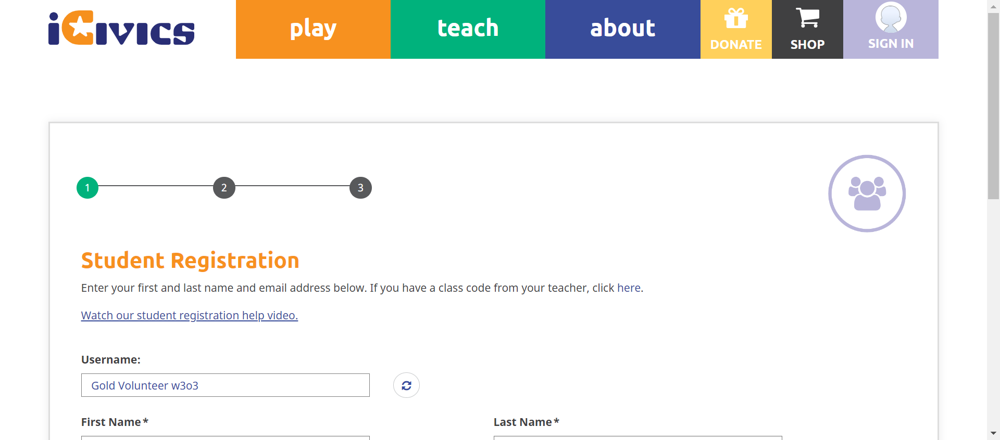 check_circle 4:11:29 PM The expected https://staging.d9.icivics.org/user/register?role=student&email=1 url as same as the https://staging.d9.icivics.org/user/register?role=student&email=1 actual url. 
check_circle 4:11:29 PM The expected text contains the actual Student Registration 
check_circle 4:11:30 PM The mouse over by xpath : (//a[@title='Sign In']//span)[3] is performed. check_circle 4:11:30 PM The element [[ChromeDriver: chrome on WINDOWS (e9921b4681d2b588a3faa01b620456ea)] -> xpath: (//li[@class='active active-trail last register as a teacher']/a)[2]] is visible 
check_circle 4:11:30 PM The expected text contains the actual REGISTER AS A TEACHER 
check_circle 4:11:33 PM The Element REGISTER AS A TEACHER clicked 
check_circle 4:11:33 PM The expected https://staging.d9.icivics.org/user/register?role=teacher url as same as the https://staging.d9.icivics.org/user/register?role=teacher actual url. 
check_circle 4:11:33 PM The expected text contains the actual Educator / Parent Registration -
C41 - If you are viewing one of the pages in the Sign In/My iCivics submenu, is that page underlined in the submenu?
Jun 22, 2022 09:58:45 PM 0h 21m 48s+561ms failStatus Timestamp Details check_circle 4:11:42 PM Signinbutton is displayed check_circle 4:11:54 PM Selected page is underlined 
cancel 4:12:06 PM Selected page is not underlined check_circle 4:12:18 PM Selected page is underlined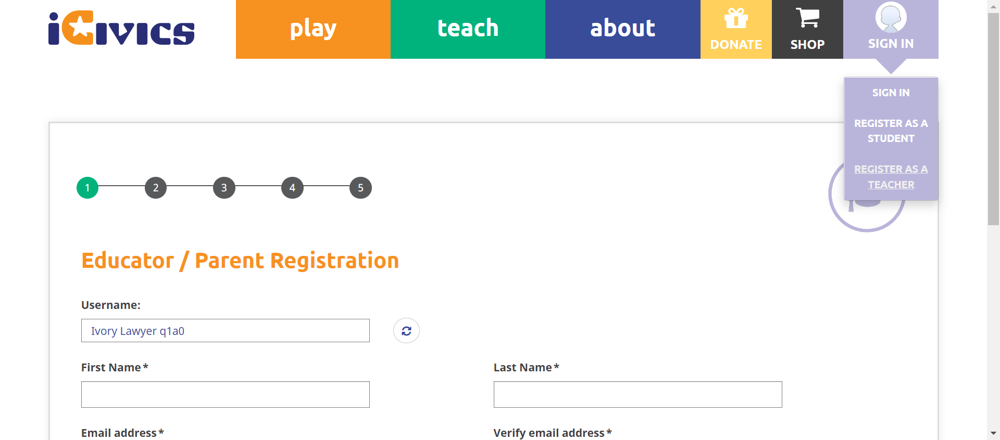 check_circle 4:12:18 PM signin submenu is close after clicking again -
C42 - When you select Sign In / My iCivics again while the submenu is open, does the submenu close?
Jun 22, 2022 09:58:45 PM 0h 21m 48s+569ms passStatus Timestamp Details check_circle 4:12:27 PM signin submenu is close after clicking again
-
-
HomepageHeaderAbout Jun 22, 2022 04:29:22 PM failJun 22, 2022 04:29:22 PM Jun 22, 2022 04:37:46 PM 0h 8m 24s+0ms
-
C22 - When you select About, does a submenu open below the About button?
Jun 22, 2022 09:58:45 PM 0h 21m 48s+577ms failStatus Timestamp Details check_circle 4:29:56 PM The Element about clicked 
check_circle 4:29:56 PM Aboutsubmenu display successfully 
check_circle 4:30:21 PM The Element clicked 
cancel 4:30:24 PM For Homepage aboutbutton is not present 
-
C23 - Do you see links to About iCivics, Who We Are, Our Strategy, CIVXNOW, Our Team, Blog, and Contact Us in the submenu?
Jun 22, 2022 09:58:45 PM 0h 21m 48s+578ms failStatus Timestamp Details check_circle 4:30:53 PM The Element about clicked 
check_circle 4:30:54 PM Aboutsubmenu display successfully 
check_circle 4:31:18 PM The Element clicked 
cancel 4:31:21 PM For Homepage aboutbutton is not present 
check_circle 4:31:21 PM Aboutbutton submenu count is 7 
check_circle 4:31:22 PM Aboutbutton submenu is 
check_circle 4:31:22 PM Aboutbutton submenu is 
check_circle 4:31:23 PM Aboutbutton submenu is 
check_circle 4:31:23 PM Aboutbutton submenu is 
check_circle 4:31:23 PM Aboutbutton submenu is 
check_circle 4:31:24 PM Aboutbutton submenu is 
check_circle 4:31:24 PM Aboutbutton submenu is 
-
C24 - When you select a link in the submenu, are you navigated to the appropriate page?
Jun 22, 2022 09:58:45 PM 0h 21m 48s+581ms passStatus Timestamp Details check_circle 4:31:54 PM The mouse over by xpath : (//a[@href='/about'])[3] is performed. 
check_circle 4:31:54 PM The element [[ChromeDriver: chrome on WINDOWS (d05759312d259d3b21ccfc90c293a844)] -> xpath: (//li[@class='first about icivics']/a)[2]] is visible 
check_circle 4:31:54 PM The expected text contains the actual ABOUT ICIVICS 
check_circle 4:32:19 PM The Element ABOUT ICIVICS clicked 
check_circle 4:32:19 PM The expected https://staging.d9.icivics.org/about url as same as the https://staging.d9.icivics.org/about actual url. 
check_circle 4:32:19 PM The expected text contains the actual iCivics reimagines civic education for American democracy 
check_circle 4:32:20 PM The mouse over by xpath : (//a[@href='/about'])[3] is performed. 
check_circle 4:32:20 PM The element [[ChromeDriver: chrome on WINDOWS (d05759312d259d3b21ccfc90c293a844)] -> xpath: (//li[contains(@class,'who we')]//a)[2]] is visible 
check_circle 4:32:20 PM The expected text contains the actual WHO WE ARE 
check_circle 4:32:49 PM The Element WHO WE ARE clicked 
check_circle 4:32:50 PM The expected https://staging.icivics.org/who-we-are url as same as the https://staging.icivics.org/who-we-are actual url. 
check_circle 4:32:54 PM The mouse over by xpath : (//a[@href='/about'])[3] is performed. 
check_circle 4:32:54 PM The element [[ChromeDriver: chrome on WINDOWS (d05759312d259d3b21ccfc90c293a844)] -> xpath: (//li[@class='our strategy']//a)[2]] is visible 
check_circle 4:32:54 PM The expected text contains the actual OUR STRATEGY 
check_circle 4:33:15 PM The Element OUR STRATEGY clicked 
check_circle 4:33:15 PM The expected https://staging.icivics.org/our-strategy url as same as the https://staging.icivics.org/our-strategy actual url. 
check_circle 4:33:18 PM The mouse over by xpath : (//a[@href='/about'])[3] is performed. 
check_circle 4:33:18 PM The element [[ChromeDriver: chrome on WINDOWS (d05759312d259d3b21ccfc90c293a844)] -> xpath: (//li[@class='civxnow']//a)[2]] is visible 
check_circle 4:33:18 PM The expected text contains the actual CIVXNOW 
check_circle 4:33:28 PM The Element CIVXNOW clicked 
check_circle 4:33:28 PM The expected https://civxnow.org/ url as same as the https://civxnow.org/ actual url. 
check_circle 4:33:31 PM The mouse over by xpath : (//a[@href='/about'])[3] is performed. 
check_circle 4:33:31 PM The element [[ChromeDriver: chrome on WINDOWS (d05759312d259d3b21ccfc90c293a844)] -> xpath: (//a[@href='/our-team'])[2]] is visible 
check_circle 4:33:31 PM The expected text contains the actual OUR TEAM 
check_circle 4:33:39 PM The Element OUR TEAM clicked 
check_circle 4:33:39 PM The expected https://staging.icivics.org/our-team url as same as the https://staging.icivics.org/our-team actual url. check_circle 4:33:41 PM The mouse over by xpath : (//a[@href='/about'])[3] is performed. 
check_circle 4:33:42 PM The element [[ChromeDriver: chrome on WINDOWS (d05759312d259d3b21ccfc90c293a844)] -> xpath: (//li[@class='blog']//a)[2]] is visible 
check_circle 4:33:42 PM The expected text contains the actual BLOG 
check_circle 4:33:45 PM The Element BLOG clicked 
check_circle 4:33:45 PM The expected https://staging.d9.icivics.org/news?keys=&tid%5B1%5D=1 url as same as the https://staging.d9.icivics.org/news?keys=&tid%5B1%5D=1 actual url. 
check_circle 4:33:45 PM The expected text contains the actual iCivics Blog and News 
check_circle 4:33:48 PM The mouse over by xpath : (//a[@href='/about'])[3] is performed. 
check_circle 4:33:48 PM The element [[ChromeDriver: chrome on WINDOWS (d05759312d259d3b21ccfc90c293a844)] -> xpath: (//a[@href='/contact'])[2]] is visible 
check_circle 4:33:48 PM The expected text contains the actual CONTACT US 
check_circle 4:33:53 PM The Element CONTACT US clicked 
check_circle 4:33:53 PM The expected https://icivics.zendesk.com/hc/en-us/requests/new url as same as the https://icivics.zendesk.com/hc/en-us/requests/new actual url. 
check_circle 4:33:55 PM All links in the About dropdown is verified sucessfully 
-
C26 - If you are viewing one of the pages in the About submenu, is that page underlined in the submenu?
Jun 22, 2022 09:58:45 PM 0h 21m 48s+592ms passStatus Timestamp Details check_circle 4:34:26 PM The mouse over by xpath : (//a[@href='/about'])[3] is performed. 
check_circle 4:34:26 PM The element [[ChromeDriver: chrome on WINDOWS (0d5c8f16d1d3769fc2eabe655db04d59)] -> xpath: (//li[@class='first about icivics']/a)[2]] is visible 
check_circle 4:34:26 PM The expected text contains the actual ABOUT ICIVICS 
check_circle 4:34:47 PM The Element ABOUT ICIVICS clicked 
check_circle 4:34:47 PM The expected https://staging.d9.icivics.org/about url as same as the https://staging.d9.icivics.org/about actual url. 
check_circle 4:34:47 PM The expected text contains the actual iCivics reimagines civic education for American democracy 
check_circle 4:34:48 PM The mouse over by xpath : (//a[@href='/about'])[3] is performed. 
check_circle 4:34:48 PM The element [[ChromeDriver: chrome on WINDOWS (0d5c8f16d1d3769fc2eabe655db04d59)] -> xpath: (//li[contains(@class,'who we')]//a)[2]] is visible 
check_circle 4:34:48 PM The expected text contains the actual WHO WE ARE 
check_circle 4:35:14 PM The Element WHO WE ARE clicked 
check_circle 4:35:14 PM The expected https://staging.icivics.org/who-we-are url as same as the https://staging.icivics.org/who-we-are actual url. 
check_circle 4:35:19 PM The mouse over by xpath : (//a[@href='/about'])[3] is performed. 
check_circle 4:35:19 PM The element [[ChromeDriver: chrome on WINDOWS (0d5c8f16d1d3769fc2eabe655db04d59)] -> xpath: (//li[@class='our strategy']//a)[2]] is visible 
check_circle 4:35:19 PM The expected text contains the actual OUR STRATEGY 
check_circle 4:35:40 PM The Element OUR STRATEGY clicked 
check_circle 4:35:40 PM The expected https://staging.icivics.org/our-strategy url as same as the https://staging.icivics.org/our-strategy actual url. 
check_circle 4:35:47 PM The mouse over by xpath : (//a[@href='/about'])[3] is performed. 
check_circle 4:35:47 PM The element [[ChromeDriver: chrome on WINDOWS (0d5c8f16d1d3769fc2eabe655db04d59)] -> xpath: (//li[@class='civxnow']//a)[2]] is visible 
check_circle 4:35:47 PM The expected text contains the actual CIVXNOW 
check_circle 4:35:47 PM The Element CIVXNOW clicked 
check_circle 4:36:00 PM The expected https://civxnow.org/ url as same as the https://civxnow.org/ actual url. 
check_circle 4:36:08 PM The mouse over by xpath : (//a[@href='/about'])[3] is performed. 
check_circle 4:36:08 PM The element [[ChromeDriver: chrome on WINDOWS (0d5c8f16d1d3769fc2eabe655db04d59)] -> xpath: (//a[@href='/our-team'])[2]] is visible 
check_circle 4:36:08 PM The expected text contains the actual OUR TEAM 
check_circle 4:36:29 PM The Element OUR TEAM clicked 
check_circle 4:36:29 PM The expected https://staging.icivics.org/our-team url as same as the https://staging.icivics.org/our-team actual url. 
check_circle 4:36:32 PM The mouse over by xpath : (//a[@href='/about'])[3] is performed. 
check_circle 4:36:33 PM The element [[ChromeDriver: chrome on WINDOWS (0d5c8f16d1d3769fc2eabe655db04d59)] -> xpath: (//li[@class='blog']//a)[2]] is visible 
check_circle 4:36:33 PM The expected text contains the actual BLOG 
check_circle 4:36:37 PM The Element BLOG clicked 
check_circle 4:36:37 PM The expected https://staging.d9.icivics.org/news?keys=&tid%5B1%5D=1 url as same as the https://staging.d9.icivics.org/news?keys=&tid%5B1%5D=1 actual url. 
check_circle 4:36:37 PM The expected text contains the actual iCivics Blog and News 
check_circle 4:36:40 PM The mouse over by xpath : (//a[@href='/about'])[3] is performed. 
check_circle 4:36:40 PM The element [[ChromeDriver: chrome on WINDOWS (0d5c8f16d1d3769fc2eabe655db04d59)] -> xpath: (//a[@href='/contact'])[2]] is visible 
check_circle 4:36:40 PM The expected text contains the actual CONTACT US 
check_circle 4:36:45 PM The Element CONTACT US clicked 
check_circle 4:36:46 PM The expected https://icivics.zendesk.com/hc/en-us/requests/new url as same as the https://icivics.zendesk.com/hc/en-us/requests/new actual url. 
check_circle 4:36:48 PM All links in the About dropdown is verified sucessfully 
-
C27 - When you select About again while the submenu is open, does the submenu close?
Jun 22, 2022 09:58:45 PM 0h 21m 48s+598ms failStatus Timestamp Details check_circle 4:37:18 PM The Element about clicked 
check_circle 4:37:18 PM Aboutsubmenu display successfully 
check_circle 4:37:42 PM The Element clicked 
cancel 4:37:46 PM For Homepage aboutbutton is not present 
cancel 4:37:46 PM About menu is not close 
-
-
HomepageHeaderAbout Jun 22, 2022 05:17:41 PM passJun 22, 2022 05:17:41 PM Jun 22, 2022 05:24:58 PM 0h 7m 17s+0ms
-
C22 - When you select About, does a submenu open below the About button?
Jun 22, 2022 09:58:45 PM 0h 21m 48s+605ms passStatus Timestamp Details check_circle 5:18:13 PM The Element about clicked 
check_circle 5:18:14 PM Aboutsubmenu display successfully 
check_circle 5:18:40 PM The Element clicked 
check_circle 5:18:43 PM For Homepage aboutbutton is not present 
-
C23 - Do you see links to About iCivics, Who We Are, Our Strategy, CIVXNOW, Our Team, Blog, and Contact Us in the submenu?
Jun 22, 2022 09:58:45 PM 0h 21m 48s+606ms passStatus Timestamp Details check_circle 5:19:45 PM The Element about clicked 
check_circle 5:19:45 PM Aboutsubmenu display successfully 
check_circle 5:19:45 PM Aboutbutton submenu count is 7 
check_circle 5:19:45 PM Aboutbutton submenu is ABOUT ICIVICS 
check_circle 5:19:46 PM Aboutbutton submenu is WHO WE ARE 
check_circle 5:19:46 PM Aboutbutton submenu is OUR STRATEGY 
check_circle 5:19:46 PM Aboutbutton submenu is CIVXNOW 
check_circle 5:19:46 PM Aboutbutton submenu is OUR TEAM 
check_circle 5:19:46 PM Aboutbutton submenu is BLOG 
check_circle 5:19:47 PM Aboutbutton submenu is CONTACT US 
-
C24 - When you select a link in the submenu, are you navigated to the appropriate page?
Jun 22, 2022 09:58:45 PM 0h 21m 48s+608ms passStatus Timestamp Details check_circle 5:20:18 PM The mouse over by xpath : (//a[@href='/about'])[3] is performed. 
check_circle 5:20:18 PM The element [[ChromeDriver: chrome on WINDOWS (b4ce266b9d7a404ceeadd0808484bd93)] -> xpath: (//li[@class='first about icivics']/a)[2]] is visible 
check_circle 5:20:18 PM The expected text contains the actual ABOUT ICIVICS 
check_circle 5:20:44 PM The Element ABOUT ICIVICS clicked 
check_circle 5:20:44 PM The expected https://staging.d9.icivics.org/about url as same as the https://staging.d9.icivics.org/about actual url. 
check_circle 5:20:44 PM The expected text contains the actual iCivics reimagines civic education for American democracy 
check_circle 5:20:45 PM The mouse over by xpath : (//a[@href='/about'])[3] is performed. 
check_circle 5:20:45 PM The element [[ChromeDriver: chrome on WINDOWS (b4ce266b9d7a404ceeadd0808484bd93)] -> xpath: (//li[contains(@class,'who we')]//a)[2]] is visible 
check_circle 5:20:45 PM The expected text contains the actual WHO WE ARE 
check_circle 5:21:11 PM The Element WHO WE ARE clicked 
check_circle 5:21:11 PM The expected https://staging.icivics.org/who-we-are url as same as the https://staging.icivics.org/who-we-are actual url. 
check_circle 5:21:14 PM The mouse over by xpath : (//a[@href='/about'])[3] is performed. 
check_circle 5:21:15 PM The element [[ChromeDriver: chrome on WINDOWS (b4ce266b9d7a404ceeadd0808484bd93)] -> xpath: (//li[@class='our strategy']//a)[2]] is visible 
check_circle 5:21:15 PM The expected text contains the actual OUR STRATEGY 
check_circle 5:21:36 PM The Element OUR STRATEGY clicked 
check_circle 5:21:36 PM The expected https://staging.icivics.org/our-strategy url as same as the https://staging.icivics.org/our-strategy actual url. 
check_circle 5:21:39 PM The mouse over by xpath : (//a[@href='/about'])[3] is performed. 
check_circle 5:21:39 PM The element [[ChromeDriver: chrome on WINDOWS (b4ce266b9d7a404ceeadd0808484bd93)] -> xpath: (//li[@class='civxnow']//a)[2]] is visible 
check_circle 5:21:39 PM The expected text contains the actual CIVXNOW 
check_circle 5:21:48 PM The Element CIVXNOW clicked 
check_circle 5:21:49 PM The expected https://civxnow.org/ url as same as the https://civxnow.org/ actual url. 
check_circle 5:21:52 PM The mouse over by xpath : (//a[@href='/about'])[3] is performed. 
check_circle 5:21:52 PM The element [[ChromeDriver: chrome on WINDOWS (b4ce266b9d7a404ceeadd0808484bd93)] -> xpath: (//a[@href='/our-team'])[2]] is visible 
check_circle 5:21:52 PM The expected text contains the actual OUR TEAM 
check_circle 5:22:00 PM The Element OUR TEAM clicked 
check_circle 5:22:00 PM The expected https://staging.icivics.org/our-team url as same as the https://staging.icivics.org/our-team actual url. 
check_circle 5:22:03 PM The mouse over by xpath : (//a[@href='/about'])[3] is performed. 
check_circle 5:22:03 PM The element [[ChromeDriver: chrome on WINDOWS (b4ce266b9d7a404ceeadd0808484bd93)] -> xpath: (//li[@class='blog']//a)[2]] is visible 
check_circle 5:22:03 PM The expected text contains the actual BLOG 
check_circle 5:22:07 PM The Element BLOG clicked 
check_circle 5:22:07 PM The expected https://staging.d9.icivics.org/news?keys=&tid%5B1%5D=1 url as same as the https://staging.d9.icivics.org/news?keys=&tid%5B1%5D=1 actual url. 
check_circle 5:22:07 PM The expected text contains the actual iCivics Blog and News 
check_circle 5:22:10 PM The mouse over by xpath : (//a[@href='/about'])[3] is performed. 
check_circle 5:22:10 PM The element [[ChromeDriver: chrome on WINDOWS (b4ce266b9d7a404ceeadd0808484bd93)] -> xpath: (//a[@href='/contact'])[2]] is visible 
check_circle 5:22:10 PM The expected text contains the actual CONTACT US 
check_circle 5:22:14 PM The Element CONTACT US clicked 
check_circle 5:22:14 PM The expected https://icivics.zendesk.com/hc/en-us/requests/new url as same as the https://icivics.zendesk.com/hc/en-us/requests/new actual url. 
check_circle 5:22:17 PM All links in the About dropdown is verified sucessfully 
-
C26 - If you are viewing one of the pages in the About submenu, is that page underlined in the submenu?
Jun 22, 2022 09:58:45 PM 0h 21m 48s+613ms passStatus Timestamp Details check_circle 5:22:48 PM The mouse over by xpath : (//a[@href='/about'])[3] is performed. 
check_circle 5:22:49 PM The element [[ChromeDriver: chrome on WINDOWS (d2baffce5d957dc6338e0c401aca3c95)] -> xpath: (//li[@class='first about icivics']/a)[2]] is visible 
check_circle 5:22:49 PM The expected text contains the actual ABOUT ICIVICS 
check_circle 5:23:09 PM The Element ABOUT ICIVICS clicked 
check_circle 5:23:10 PM The expected https://staging.d9.icivics.org/about url as same as the https://staging.d9.icivics.org/about actual url. 
check_circle 5:23:10 PM The expected text contains the actual iCivics reimagines civic education for American democracy 
check_circle 5:23:10 PM The mouse over by xpath : (//a[@href='/about'])[3] is performed. 
check_circle 5:23:11 PM The element [[ChromeDriver: chrome on WINDOWS (d2baffce5d957dc6338e0c401aca3c95)] -> xpath: (//li[contains(@class,'who we')]//a)[2]] is visible 
check_circle 5:23:11 PM The expected text contains the actual WHO WE ARE 
check_circle 5:23:37 PM The Element WHO WE ARE clicked 
check_circle 5:23:37 PM The expected https://staging.icivics.org/who-we-are url as same as the https://staging.icivics.org/who-we-are actual url. 
check_circle 5:23:41 PM The mouse over by xpath : (//a[@href='/about'])[3] is performed. 
check_circle 5:23:41 PM The element [[ChromeDriver: chrome on WINDOWS (d2baffce5d957dc6338e0c401aca3c95)] -> xpath: (//li[@class='our strategy']//a)[2]] is visible 
check_circle 5:23:41 PM The expected text contains the actual OUR STRATEGY 
check_circle 5:24:02 PM The Element OUR STRATEGY clicked 
check_circle 5:24:02 PM The expected https://staging.icivics.org/our-strategy url as same as the https://staging.icivics.org/our-strategy actual url. 
check_circle 5:24:06 PM The mouse over by xpath : (//a[@href='/about'])[3] is performed. 
check_circle 5:24:06 PM The element [[ChromeDriver: chrome on WINDOWS (d2baffce5d957dc6338e0c401aca3c95)] -> xpath: (//li[@class='civxnow']//a)[2]] is visible 
check_circle 5:24:06 PM The expected text contains the actual CIVXNOW 
check_circle 5:24:07 PM The Element CIVXNOW clicked 
check_circle 5:24:18 PM The expected https://civxnow.org/ url as same as the https://civxnow.org/ actual url. check_circle 5:24:21 PM The mouse over by xpath : (//a[@href='/about'])[3] is performed. 
check_circle 5:24:21 PM The element [[ChromeDriver: chrome on WINDOWS (d2baffce5d957dc6338e0c401aca3c95)] -> xpath: (//a[@href='/our-team'])[2]] is visible 
check_circle 5:24:21 PM The expected text contains the actual OUR TEAM 
check_circle 5:24:27 PM The Element OUR TEAM clicked 
check_circle 5:24:28 PM The expected https://staging.icivics.org/our-team url as same as the https://staging.icivics.org/our-team actual url. 
check_circle 5:24:30 PM The mouse over by xpath : (//a[@href='/about'])[3] is performed. 
check_circle 5:24:30 PM The element [[ChromeDriver: chrome on WINDOWS (d2baffce5d957dc6338e0c401aca3c95)] -> xpath: (//li[@class='blog']//a)[2]] is visible 
check_circle 5:24:30 PM The expected text contains the actual BLOG 
check_circle 5:24:34 PM The Element BLOG clicked 
check_circle 5:24:34 PM The expected https://staging.d9.icivics.org/news?keys=&tid%5B1%5D=1 url as same as the https://staging.d9.icivics.org/news?keys=&tid%5B1%5D=1 actual url. 
check_circle 5:24:34 PM The expected text contains the actual iCivics Blog and News 
check_circle 5:24:37 PM The mouse over by xpath : (//a[@href='/about'])[3] is performed. 
check_circle 5:24:37 PM The element [[ChromeDriver: chrome on WINDOWS (d2baffce5d957dc6338e0c401aca3c95)] -> xpath: (//a[@href='/contact'])[2]] is visible 
check_circle 5:24:37 PM The expected text contains the actual CONTACT US 
check_circle 5:24:45 PM The Element CONTACT US clicked 
check_circle 5:24:46 PM The expected https://icivics.zendesk.com/hc/en-us/requests/new url as same as the https://icivics.zendesk.com/hc/en-us/requests/new actual url. 
check_circle 5:24:49 PM All links in the About dropdown is verified sucessfully 
-
C27 - When you select About again while the submenu is open, does the submenu close?
Jun 22, 2022 09:58:45 PM 0h 21m 48s+619ms passStatus Timestamp Details check_circle 5:24:58 PM The Element about clicked 
check_circle 5:24:58 PM Aboutsubmenu display successfully 
check_circle 5:24:58 PM About button is clicked again and about menu is close 
-
-
HomepageHeaderteach Jun 22, 2022 05:36:47 PM passJun 22, 2022 05:36:47 PM Jun 22, 2022 05:38:47 PM 0h 2m 0s+0ms
-
C15 - When you select Teach, does a submenu open below the Teach button?
Jun 22, 2022 09:58:45 PM 0h 21m 48s+625ms passStatus Timestamp Details check_circle 5:36:55 PM The Element teach clicked 
check_circle 5:36:55 PM Teachsubmenu is display 
-
C16 - Do you see links to Search Our Library, Scope and Sequence, Professional Development, Get Started, Educatory Community, and FAQ in the submenu?
Jun 22, 2022 09:58:45 PM 0h 21m 48s+626ms passStatus Timestamp Details check_circle 5:37:01 PM The Element teach clicked 
check_circle 5:37:01 PM Teachsubmenu is display 
check_circle 5:37:02 PM Teachbutton submenu count is 6 
check_circle 5:37:02 PM Teachbutton submenu is SEARCH OUR LIBRARY check_circle 5:37:02 PM Teachbutton submenu is SCOPE & SEQUENCE 
check_circle 5:37:02 PM Teachbutton submenu is PROFESSIONAL DEVELOPMENT 
check_circle 5:37:03 PM Teachbutton submenu is GET STARTED 
check_circle 5:37:03 PM Teachbutton submenu is EDUCATOR COMMUNITY 
check_circle 5:37:03 PM Teachbutton submenu is FAQ 
-
C17 - When you select a link in the submenu, are you navigated to the appropriate page?
Jun 22, 2022 09:58:45 PM 0h 21m 48s+627ms passStatus Timestamp Details check_circle 5:37:10 PM The mouse over by xpath : (//a[@title='Search Our Library'])[3] is performed. 
check_circle 5:37:10 PM The element [[ChromeDriver: chrome on WINDOWS (80c8c5912853be6e1d08e4a7323399a5)] -> xpath: (//li[@class='first search our library']/a)[2]] is visible 
check_circle 5:37:10 PM The expected text contains the actual SEARCH OUR LIBRARY 
check_circle 5:37:32 PM The Element SEARCH OUR LIBRARY clicked 
check_circle 5:37:32 PM The expected https://staging.d9.icivics.org/teachers url as same as the https://staging.d9.icivics.org/teachers actual url. 
check_circle 5:37:32 PM The expected text contains the actual CONTENT SEARCH 
check_circle 5:37:32 PM The mouse over by xpath : (//a[@title='Search Our Library'])[3] is performed. 
check_circle 5:37:33 PM The element [[ChromeDriver: chrome on WINDOWS (80c8c5912853be6e1d08e4a7323399a5)] -> xpath: (//a[@title='Scope and Sequence'])[2]] is visible 
check_circle 5:37:33 PM The expected text contains the actual SCOPE & SEQUENCE 
check_circle 5:37:37 PM The Element SCOPE & SEQUENCE clicked 
check_circle 5:37:37 PM The expected https://staging.d9.icivics.org/user/login?destination=/viewpdf%3Fpath%3D/sites/default/files/Scope%2520%2526%2520Sequence%25205.13.pdf url as same as the https://staging.d9.icivics.org/user/login?destination=/viewpdf%3Fpath%3D/sites/default/files/Scope%2520%2526%2520Sequence%25205.13.pdf actual url. 
check_circle 5:37:37 PM The expected text contains the actual Log in to iCivics 
check_circle 5:37:38 PM The mouse over by xpath : (//a[@title='Search Our Library'])[3] is performed. check_circle 5:37:38 PM The element [[ChromeDriver: chrome on WINDOWS (80c8c5912853be6e1d08e4a7323399a5)] -> xpath: (//li[@class='professional development']//a)[2]] is visible 
check_circle 5:37:38 PM The expected text contains the actual PROFESSIONAL DEVELOPMENT 
check_circle 5:37:58 PM The Element PROFESSIONAL DEVELOPMENT clicked 
check_circle 5:37:58 PM The expected https://staging.d9.icivics.org/products/professional-development url as same as the https://staging.d9.icivics.org/products/professional-development actual url. 
check_circle 5:37:58 PM The expected text contains the actual Professional Development 
check_circle 5:37:59 PM The mouse over by xpath : (//a[@title='Search Our Library'])[3] is performed. 
check_circle 5:37:59 PM The element [[ChromeDriver: chrome on WINDOWS (80c8c5912853be6e1d08e4a7323399a5)] -> xpath: (//li[@class='get started']//a)[2]] is visible 
check_circle 5:37:59 PM The expected text contains the actual GET STARTED 
check_circle 5:38:23 PM The Element GET STARTED clicked 
check_circle 5:38:23 PM The expected https://staging.d9.icivics.org/getstarted url as same as the https://staging.d9.icivics.org/getstarted actual url. 
check_circle 5:38:23 PM The expected text contains the actual Welcome to iCivics! 
check_circle 5:38:24 PM The mouse over by xpath : (//a[@title='Search Our Library'])[3] is performed. 
check_circle 5:38:24 PM The element [[ChromeDriver: chrome on WINDOWS (80c8c5912853be6e1d08e4a7323399a5)] -> xpath: (//li[@class='educator community']//a)[2]] is visible 
check_circle 5:38:24 PM The expected text contains the actual EDUCATOR COMMUNITY 
check_circle 5:38:30 PM The Element EDUCATOR COMMUNITY clicked 
check_circle 5:38:35 PM The mouse over by xpath : (//a[@title='Search Our Library'])[3] is performed. 
check_circle 5:38:35 PM The element [[ChromeDriver: chrome on WINDOWS (80c8c5912853be6e1d08e4a7323399a5)] -> xpath: (//li[@class='last faq']//a)[2]] is visible 
check_circle 5:38:35 PM The expected text contains the actual FAQ 
check_circle 5:38:40 PM The Element FAQ clicked 
check_circle 5:38:40 PM The expected https://icivics.zendesk.com/hc/en-us url as same as the https://icivics.zendesk.com/hc/en-us actual url. 
check_circle 5:38:40 PM The expected text contains the actual Getting Started 
check_circle 5:38:40 PM All links in the teach dropdown is verified sucessfully 
-
C20 - When you select Teach again while the submenu is open, does the submenu close?
Jun 22, 2022 09:58:45 PM 0h 21m 48s+631ms passStatus Timestamp Details check_circle 5:38:46 PM The Element teach clicked 
check_circle 5:38:46 PM Teachsubmenu is display 
check_circle 5:38:47 PM The Element teach clicked 
check_circle 5:38:47 PM on clicking again teach submenu is close 
-
-
HomepageHeaderteach Jun 22, 2022 05:42:36 PM passJun 22, 2022 05:42:36 PM Jun 22, 2022 05:42:45 PM 0h 0m 9s+0ms
-
C20 - When you select Teach again while the submenu is open, does the submenu close?
Jun 22, 2022 09:58:45 PM 0h 21m 48s+634ms passStatus Timestamp Details check_circle 5:42:45 PM The Element teach clicked 
check_circle 5:42:45 PM Teachsubmenu is display 
check_circle 5:42:45 PM The Element teach clicked 
check_circle 5:42:45 PM Teach submenu is close on clicking again 
-
-
HomepageHeaderteach2 Jun 22, 2022 06:05:20 PM passJun 22, 2022 06:05:20 PM Jun 22, 2022 06:05:54 PM 0h 0m 34s+0ms
-
C19 - If you are viewing one of the pages in the Teach submenu, is that page underlined in the submenu?
Jun 22, 2022 09:58:45 PM 0h 21m 48s+637ms passStatus Timestamp Details check_circle 6:05:54 PM Teachsubmenu is display 
-
-
HomepageHeaderteach2 Jun 22, 2022 06:08:15 PM failJun 22, 2022 06:08:15 PM Jun 22, 2022 06:09:02 PM 0h 0m 47s+0ms
-
C19 - If you are viewing one of the pages in the Teach submenu, is that page underlined in the submenu?
Jun 22, 2022 09:58:45 PM 0h 21m 48s+639ms failStatus Timestamp Details check_circle 6:08:48 PM Teachsubmenu is display 
check_circle 6:08:59 PM The Element teach clicked 
check_circle 6:09:02 PM Selected page is underlined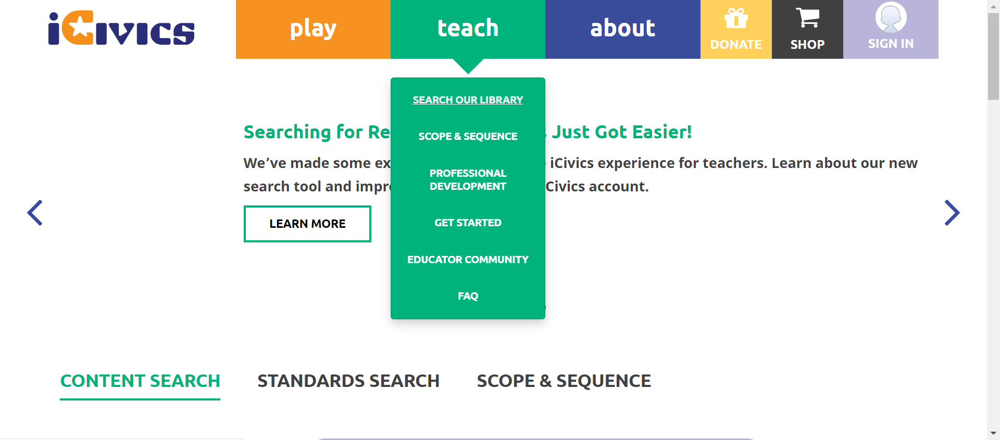 cancel 6:09:02 PM The Element with locator:XPATH&(//li[@class='scope & sequence']/a)[2] Not Found with value: (//li[@class='scope 
-
-
HomepageHeaderteach2 Jun 22, 2022 06:09:55 PM failJun 22, 2022 06:09:55 PM Jun 22, 2022 06:10:41 PM 0h 0m 46s+0ms
-
C19 - If you are viewing one of the pages in the Teach submenu, is that page underlined in the submenu?
Jun 22, 2022 09:58:45 PM 0h 21m 48s+641ms failStatus Timestamp Details check_circle 6:10:28 PM Teachsubmenu is display 
check_circle 6:10:38 PM The Element teach clicked 
check_circle 6:10:41 PM Selected page is underlined 
cancel 6:10:41 PM The Element with locator:XPATH&(//li[@class='scope & sequence']/a)[2] Not Found with value: (//li[@class='scope 
-
-
HomepageHeaderteach2 Jun 22, 2022 06:15:01 PM failJun 22, 2022 06:15:01 PM Jun 22, 2022 06:15:49 PM 0h 0m 48s+0ms
-
C19 - If you are viewing one of the pages in the Teach submenu, is that page underlined in the submenu?
Jun 22, 2022 09:58:45 PM 0h 21m 48s+642ms failStatus Timestamp Details check_circle 6:15:35 PM Teachsubmenu is display 
check_circle 6:15:45 PM The Element teach clicked 
check_circle 6:15:49 PM Selected page is underlined 
cancel 6:15:49 PM The Element with locator:XPATH&(//li[@class='scope & sequence']/a)[2] Not Found with value: (//li[@class='scope 
-
-
HomepageHeaderteach2 Jun 22, 2022 06:16:25 PM failJun 22, 2022 06:16:25 PM Jun 22, 2022 06:17:12 PM 0h 0m 47s+0ms
-
C19 - If you are viewing one of the pages in the Teach submenu, is that page underlined in the submenu?
Jun 22, 2022 09:58:45 PM 0h 21m 48s+645ms failStatus Timestamp Details check_circle 6:16:58 PM Teachsubmenu is display 
check_circle 6:17:08 PM The Element teach clicked 
check_circle 6:17:11 PM Selected page is underlined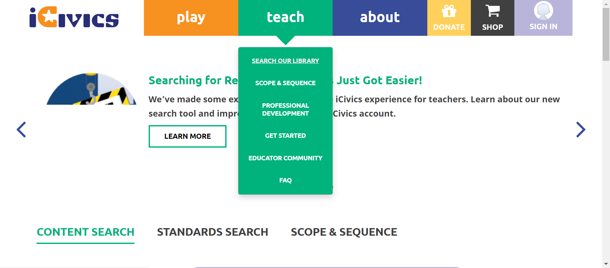 check_circle 6:17:11 PM The Element teach clicked 
cancel 6:17:12 PM The Element with locator:XPATH&(//li[@class='scope & sequence']/a)[2] Not Found with value: (//li[@class='scope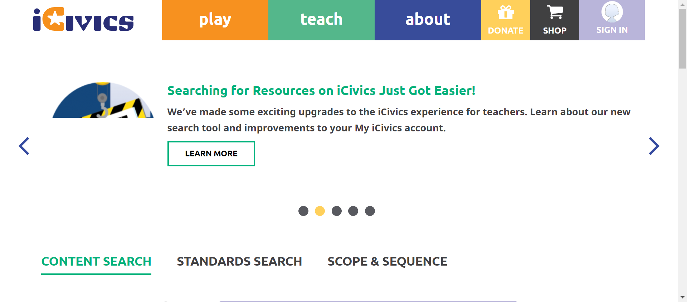
-
-
HomepageHeaderteach2 Jun 22, 2022 06:24:04 PM failJun 22, 2022 06:24:04 PM Jun 22, 2022 06:24:53 PM 0h 0m 49s+0ms
-
C19 - If you are viewing one of the pages in the Teach submenu, is that page underlined in the submenu?
Jun 22, 2022 09:58:45 PM 0h 21m 48s+647ms failStatus Timestamp Details check_circle 6:24:40 PM Teachsubmenu is display 
check_circle 6:24:49 PM The Element teach clicked 
check_circle 6:24:53 PM Selected page is underlined 
cancel 6:24:53 PM The Element with locator:XPATH&(//li[@class='scope & sequence']/a)[2] Not Found with value: (//li[@class='scope 
-
-
HomepageHeaderteach2 Jun 22, 2022 06:30:05 PM failJun 22, 2022 06:30:05 PM Jun 22, 2022 06:30:52 PM 0h 0m 47s+0ms
-
C19 - If you are viewing one of the pages in the Teach submenu, is that page underlined in the submenu?
Jun 22, 2022 09:58:45 PM 0h 21m 48s+649ms failStatus Timestamp Details check_circle 6:30:39 PM Teachsubmenu is display 
check_circle 6:30:49 PM The Element teach clicked 
check_circle 6:30:52 PM Selected page is underlined 
cancel 6:30:52 PM The Element with locator:XPATH&(//li[@class='scope & sequence']/a)[2] Not Found with value: (//li[@class='scope 
-
-
HomepageHeaderteach2 Jun 22, 2022 06:33:19 PM failJun 22, 2022 06:33:19 PM Jun 22, 2022 06:35:12 PM 0h 1m 53s+0ms
-
C19 - If you are viewing one of the pages in the Teach submenu, is that page underlined in the submenu?
Jun 22, 2022 09:58:45 PM 0h 21m 48s+652ms failStatus Timestamp Details check_circle 6:33:53 PM Teachsubmenu is display 
check_circle 6:34:03 PM The Element teach clicked 
check_circle 6:34:06 PM Selected page is underlined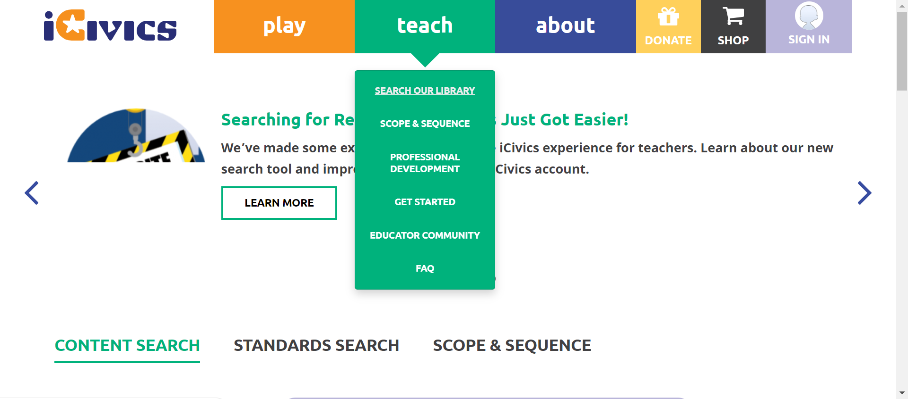 check_circle 6:34:16 PM The Element teach clicked cancel 6:34:19 PM Selected page is not underlined 
check_circle 6:34:38 PM The Element teach clicked 
cancel 6:35:12 PM The Element with locator:XPATH&(//li[@class='professional development']/a)[2] Not Found with value: (//li[@class='professional development']/a)[2] 
-
-
HomepageHeaderteach2 Jun 22, 2022 06:39:46 PM failJun 22, 2022 06:39:46 PM Jun 22, 2022 06:41:16 PM 0h 1m 30s+0ms
-
C19 - If you are viewing one of the pages in the Teach submenu, is that page underlined in the submenu?
Jun 22, 2022 09:58:45 PM 0h 21m 48s+655ms failStatus Timestamp Details check_circle 6:40:19 PM Teachsubmenu is display 
check_circle 6:40:29 PM The Element teach clicked 
check_circle 6:40:32 PM Selected page is underlined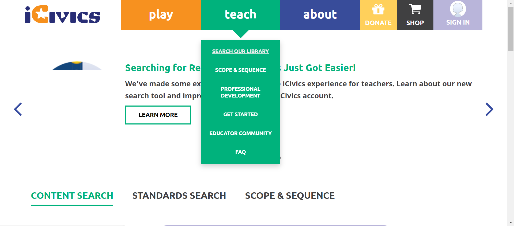 check_circle 6:40:42 PM The Element teach clicked 
cancel 6:40:46 PM Selected page is not underlined 
cancel 6:41:16 PM The Element with locator:XPATH&(//a[@class='active-trail is-active'])[2] Not Found with value: (//a[@class='active-trail is-active'])[2]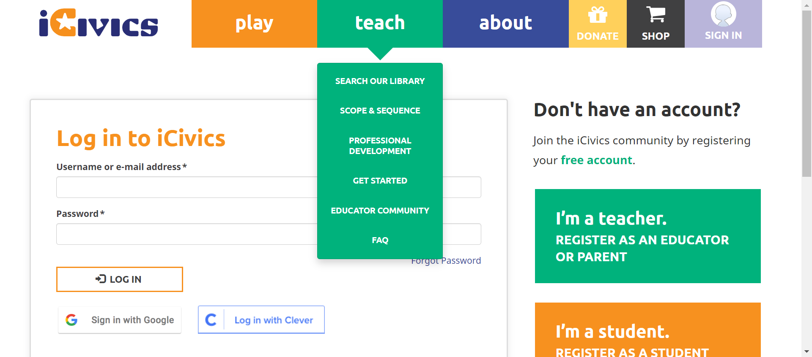
-
-
HomepageHeaderteach2 Jun 22, 2022 07:36:41 PM failJun 22, 2022 07:36:41 PM Jun 22, 2022 07:38:11 PM 0h 1m 30s+0ms
-
C19 - If you are viewing one of the pages in the Teach submenu, is that page underlined in the submenu?
Jun 22, 2022 09:58:45 PM 0h 21m 48s+658ms failStatus Timestamp Details check_circle 7:37:17 PM Teachsubmenu is display 
check_circle 7:37:27 PM The Element teach clicked 
check_circle 7:37:30 PM Selected page is underlined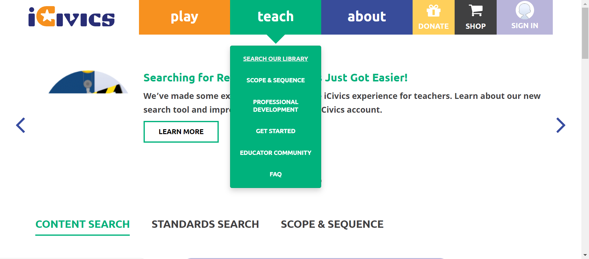 check_circle 7:37:38 PM The Element teach clicked cancel 7:37:41 PM Selected page is not underlined 
cancel 7:38:11 PM The Element with locator:XPATH&(//a[@class='active-trail is-active'])[2] Not Found with value: (//a[@class='active-trail is-active'])[2] 
-
-
HomepageHeaderteach2 Jun 22, 2022 07:40:21 PM failJun 22, 2022 07:40:21 PM Jun 22, 2022 07:41:43 PM 0h 1m 22s+0ms
-
C19 - If you are viewing one of the pages in the Teach submenu, is that page underlined in the submenu?
Jun 22, 2022 09:58:45 PM 0h 21m 48s+660ms failStatus Timestamp Details check_circle 7:40:52 PM Teachsubmenu is display 
check_circle 7:41:00 PM The Element teach clicked 
check_circle 7:41:03 PM Selected page is underlined 
check_circle 7:41:10 PM The Element teach clicked cancel 7:41:13 PM Selected page is not underlined 
cancel 7:41:43 PM The Element with locator:XPATH&(//li[@class='active active-trail professional development'])[2]/a Not Found with value: (//li[@class='active active-trail professional development'])[2]/a 
-
-
HomepageHeaderteach2 Jun 22, 2022 07:46:34 PM failJun 22, 2022 07:46:34 PM Jun 22, 2022 07:48:03 PM 0h 1m 29s+0ms
-
C19 - If you are viewing one of the pages in the Teach submenu, is that page underlined in the submenu?
Jun 22, 2022 09:58:45 PM 0h 21m 48s+662ms failStatus Timestamp Details check_circle 7:47:06 PM Teachsubmenu is display 
check_circle 7:47:15 PM The Element teach clicked 
check_circle 7:47:18 PM Selected page is underlined 
check_circle 7:47:27 PM The Element teach clicked cancel 7:47:30 PM Selected page is not underlined 
check_circle 7:47:32 PM The Element teach clicked 
cancel 7:48:03 PM The Element with locator:XPATH&(//li[@class='active active-trail professional development'])[2]/a Not Found with value: (//li[@class='active active-trail professional development'])[2]/a 
-
-
HomepageHeaderteach2 Jun 22, 2022 07:48:56 PM failJun 22, 2022 07:48:56 PM Jun 22, 2022 07:50:26 PM 0h 1m 30s+0ms
-
C19 - If you are viewing one of the pages in the Teach submenu, is that page underlined in the submenu?
Jun 22, 2022 09:58:45 PM 0h 21m 48s+665ms failStatus Timestamp Details check_circle 7:49:27 PM Teachsubmenu is display 
check_circle 7:49:37 PM The Element teach clicked 
check_circle 7:49:40 PM Selected page is underlined 
check_circle 7:49:47 PM The Element teach clicked cancel 7:49:50 PM Selected page is not underlined 
check_circle 7:49:53 PM The Element teach clicked 
cancel 7:50:26 PM The Element with locator:XPATH&(//li[@class='active active-trail professional development'])[2]/a Not Found with value: (//li[@class='active active-trail professional development'])[2]/a 
-
-
HomepageHeaderteach2 Jun 22, 2022 07:52:57 PM failJun 22, 2022 07:52:57 PM Jun 22, 2022 07:54:29 PM 0h 1m 32s+0ms
-
C19 - If you are viewing one of the pages in the Teach submenu, is that page underlined in the submenu?
Jun 22, 2022 09:58:45 PM 0h 21m 48s+666ms failStatus Timestamp Details check_circle 7:53:30 PM Teachsubmenu is display 
check_circle 7:53:39 PM The Element teach clicked 
check_circle 7:53:42 PM Selected page is underlined 
check_circle 7:53:49 PM The Element teach clicked cancel 7:53:52 PM Selected page is not underlined 
check_circle 7:53:56 PM The Element teach clicked 
cancel 7:54:29 PM The Element with locator:XPATH&(//a[@class='active-trail is-active'])[2] Not Found with value: (//a[@class='active-trail is-active'])[2] 
-
-
HomepageHeaderteach2 Jun 22, 2022 07:55:23 PM failJun 22, 2022 07:55:23 PM Jun 22, 2022 07:57:01 PM 0h 1m 38s+0ms
-
C19 - If you are viewing one of the pages in the Teach submenu, is that page underlined in the submenu?
Jun 22, 2022 09:58:45 PM 0h 21m 48s+668ms failStatus Timestamp Details check_circle 7:55:54 PM Teachsubmenu is display 
check_circle 7:56:03 PM The Element teach clicked 
check_circle 7:56:06 PM Selected page is underlined 
check_circle 7:56:13 PM The Element teach clicked 
cancel 7:56:16 PM Selected page is not underlined 
check_circle 7:56:18 PM The Element teach clicked 
check_circle 7:56:28 PM The Element teach clicked 
cancel 7:57:01 PM The Element with locator:XPATH&(//li[@class='professional development'])[2]/a Not Found with value: (//li[@class='professional development'])[2]/a 
-
-
HomepageHeaderteach2 Jun 22, 2022 07:58:33 PM failJun 22, 2022 07:58:33 PM Jun 22, 2022 08:00:09 PM 0h 1m 36s+0ms
-
C19 - If you are viewing one of the pages in the Teach submenu, is that page underlined in the submenu?
Jun 22, 2022 09:58:45 PM 0h 21m 48s+671ms failStatus Timestamp Details check_circle 7:58:43 PM Teachsubmenu is display 
check_circle 7:59:08 PM The Element teach clicked 
check_circle 7:59:11 PM Selected page is underlined 
check_circle 7:59:20 PM The Element teach clicked 
cancel 7:59:23 PM Selected page is not underlined 
check_circle 7:59:27 PM The Element teach clicked 
check_circle 7:59:35 PM The Element teach clicked 
cancel 8:00:09 PM The Element with locator:XPATH&(//li[@class='professional development'])[2]/a Not Found with value: (//li[@class='professional development'])[2]/a 
-
-
HomepageHeaderteach2 Jun 22, 2022 09:20:21 PM failJun 22, 2022 09:20:21 PM Jun 22, 2022 09:21:05 PM 0h 0m 44s+0ms
-
C19 - If you are viewing one of the pages in the Teach submenu, is that page underlined in the submenu?
Jun 22, 2022 09:58:45 PM 0h 21m 48s+673ms failStatus Timestamp Details check_circle 9:20:53 PM Teachsubmenu is display 
check_circle 9:21:02 PM The Element teach clicked 
cancel 9:21:05 PM The Element with locator:XPATH&(//li[@class='last faq']/a)[2 Not Found with value: (//li[@class='last faq']/a)[2 
-
-
HomepageHeaderteach2 Jun 22, 2022 09:22:05 PM failJun 22, 2022 09:22:05 PM Jun 22, 2022 09:22:52 PM 0h 0m 47s+0ms
-
C19 - If you are viewing one of the pages in the Teach submenu, is that page underlined in the submenu?
Jun 22, 2022 09:58:45 PM 0h 21m 48s+675ms failStatus Timestamp Details check_circle 9:22:36 PM Teachsubmenu is display 
check_circle 9:22:44 PM The Element teach clicked 
cancel 9:22:52 PM The Element with locator:XPATH&(//li[@class='last faq']/a)[2 Not Found with value: (//li[@class='last faq']/a)[2 
-
-
HomepageHeaderteach2 Jun 22, 2022 09:23:52 PM passJun 22, 2022 09:23:52 PM Jun 22, 2022 09:24:33 PM 0h 0m 41s+0ms
-
C19 - If you are viewing one of the pages in the Teach submenu, is that page underlined in the submenu?
Jun 22, 2022 09:58:45 PM 0h 21m 48s+677ms passStatus Timestamp Details check_circle 9:24:00 PM Teachsubmenu is display 
check_circle 9:24:25 PM The Element teach clicked 
check_circle 9:24:32 PM Selected page is underlined 
check_circle 9:24:33 PM The Element teach clicked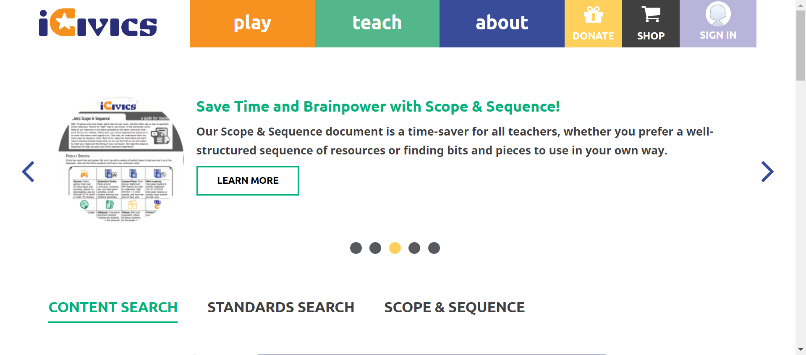 check_circle 9:24:33 PM Teach submenu is close on clicking again 
-
-
HomepageHeaderteach2 Jun 22, 2022 09:34:52 PM failJun 22, 2022 09:34:52 PM Jun 22, 2022 09:36:14 PM 0h 1m 22s+0ms
-
C19 - If you are viewing one of the pages in the Teach submenu, is that page underlined in the submenu?
Jun 22, 2022 09:58:45 PM 0h 21m 48s+678ms failStatus Timestamp Details check_circle 9:35:01 PM Teachsubmenu is display 
check_circle 9:35:27 PM The Element teach clicked 
check_circle 9:35:35 PM Selected page is underlined and non selected page is not underlined 
check_circle 9:35:41 PM The Element teach clicked cancel 9:36:14 PM The Element with locator:XPATH&(//li[@class='active active-trail first search our library']/a)[2] Not Found with value: (//li[@class='active active-trail first search our library']/a)[2] 
-
-
HomepageHeaderteach2 Jun 22, 2022 09:36:57 PM failJun 22, 2022 09:36:57 PM Jun 22, 2022 09:38:27 PM 0h 1m 30s+0ms
-
C19 - If you are viewing one of the pages in the Teach submenu, is that page underlined in the submenu?
Jun 22, 2022 09:58:45 PM 0h 20m 18s+681ms failStatus Timestamp Details check_circle 9:37:27 PM Teachsubmenu is display 
check_circle 9:37:35 PM The Element teach clicked 
check_circle 9:37:43 PM Selected page is underlined and non selected page is not underlined 
check_circle 9:37:49 PM The Element teach clicked cancel 9:38:27 PM The Element with locator:XPATH&(//li[@class='active active-trail first search our library']/a)[2] Not Found with value: (//li[@class='active active-trail first search our library']/a)[2] 
-
-
HomepageHeaderplay Jun 22, 2022 09:58:45 PM passJun 22, 2022 09:58:45 PM Jun 22, 2022 10:06:47 PM 0h 8m 1s+584ms
-
C8 - When you select Play, does a submenu open below the Play button?
Jun 22, 2022 09:58:56 PM 0h 0m 8s+300ms passStatus Timestamp Details check_circle 9:58:56 PM playbutton submenu is display 
-
C10- When you select a link in the submenu, are you navigated to the appropriate page?
Jun 22, 2022 10:06:04 PM 0h 7m 6s+737ms passStatus Timestamp Details check_circle 9:59:04 PM The mouse over by xpath : (//*[@title='Play Games'])[3] is performed. 
check_circle 9:59:04 PM The element [[ChromeDriver: chrome on WINDOWS (54651115c557455d04703564b865a54d)] -> xpath: (//li[contains(@class,'first all')]//a)[2]] is visible 
check_circle 9:59:04 PM The expected text contains the actual ALL GAMES 
check_circle 9:59:06 PM The Element ALL GAMES clicked 
check_circle 9:59:06 PM The expected https://staging.d9.icivics.org/games url as same as the https://staging.d9.icivics.org/games actual url. 
check_circle 9:59:06 PM The mouse over by xpath : (//*[@title='Play Games'])[3] is performed. 
check_circle 9:59:07 PM The element [[ChromeDriver: chrome on WINDOWS (54651115c557455d04703564b865a54d)] -> xpath: (//li[contains(@class,'cast')]//a)[2]] is visible 
check_circle 9:59:07 PM The expected text contains the actual CAST YOUR VOTE 
check_circle 9:59:27 PM The Element CAST YOUR VOTE clicked 
check_circle 9:59:27 PM The expected https://staging.d9.icivics.org/games/cast-your-vote url as same as the https://staging.d9.icivics.org/games/cast-your-vote actual url. 
check_circle 9:59:28 PM The expected text contains the actual Cast Your Vote 
check_circle 9:59:28 PM The mouse over by xpath : (//*[@title='Play Games'])[3] is performed. 
check_circle 9:59:29 PM The element [[ChromeDriver: chrome on WINDOWS (54651115c557455d04703564b865a54d)] -> xpath: (//li[@class='counties work: texas']/a)[2]] is visible 
check_circle 9:59:29 PM The expected text contains the actual COUNTIES WORK: TEXAS 
check_circle 9:59:59 PM The Element COUNTIES WORK: TEXAS clicked 
check_circle 9:59:59 PM The expected https://staging.d9.icivics.org/games/counties-work-texas url as same as the https://staging.d9.icivics.org/games/counties-work-texas actual url. 
check_circle 9:59:59 PM The expected text contains the actual Counties Work: Texas 
check_circle 10:00:00 PM The mouse over by xpath : (//*[@title='Play Games'])[3] is performed. 
check_circle 10:00:00 PM The element [[ChromeDriver: chrome on WINDOWS (54651115c557455d04703564b865a54d)] -> xpath: (//li[@class='executive command']/a)[2]] is visible 
check_circle 10:00:00 PM The expected text contains the actual EXECUTIVE COMMAND 
check_circle 10:00:28 PM The Element EXECUTIVE COMMAND clicked 
check_circle 10:00:28 PM The expected https://staging.d9.icivics.org/games/executive-command url as same as the https://staging.d9.icivics.org/games/executive-command actual url. 
check_circle 10:00:28 PM The expected text contains the actual Executive Command 
check_circle 10:00:29 PM The mouse over by xpath : (//*[@title='Play Games'])[3] is performed. 
check_circle 10:00:29 PM The element [[ChromeDriver: chrome on WINDOWS (54651115c557455d04703564b865a54d)] -> xpath: (//li[@class='lawcraft']/a)[2]] is visible 
check_circle 10:00:29 PM The expected text contains the actual LAWCRAFT 
check_circle 10:00:59 PM The Element LAWCRAFT clicked 
check_circle 10:01:00 PM The expected https://staging.d9.icivics.org/games/lawcraft url as same as the https://staging.d9.icivics.org/games/lawcraft actual url. 
check_circle 10:01:00 PM The expected text contains the actual LawCraft 
check_circle 10:01:00 PM The mouse over by xpath : (//*[@title='Play Games'])[3] is performed. 
check_circle 10:01:01 PM The element [[ChromeDriver: chrome on WINDOWS (54651115c557455d04703564b865a54d)] -> xpath: (//li[@class='sortify: u.s. citizenship']/a)[2]] is visible 
check_circle 10:01:01 PM The expected text contains the actual SORTIFY: U.S. CITIZENSHIP 
check_circle 10:01:40 PM The Element SORTIFY: U.S. CITIZENSHIP clicked 
check_circle 10:01:40 PM The expected https://staging.d9.icivics.org/games/sortify-us-citizenship url as same as the https://staging.d9.icivics.org/games/sortify-us-citizenship actual url. 
check_circle 10:01:41 PM The expected text contains the actual Sortify: U.S. Citizenship 
check_circle 10:01:41 PM The mouse over by xpath : (//*[@title='Play Games'])[3] is performed. 
check_circle 10:01:41 PM The element [[ChromeDriver: chrome on WINDOWS (54651115c557455d04703564b865a54d)] -> xpath: (//li[@class='argument wars']/a)[2]] is visible 
check_circle 10:01:42 PM The expected text contains the actual ARGUMENT WARS 
check_circle 10:02:05 PM The Element ARGUMENT WARS clicked 
check_circle 10:02:05 PM The expected https://staging.d9.icivics.org/games/argument-wars url as same as the https://staging.d9.icivics.org/games/argument-wars actual url. 
check_circle 10:02:06 PM The expected text contains the actual Argument Wars 
check_circle 10:02:06 PM The mouse over by xpath : (//*[@title='Play Games'])[3] is performed. 
check_circle 10:02:06 PM The element [[ChromeDriver: chrome on WINDOWS (54651115c557455d04703564b865a54d)] -> xpath: (//li[@class='convene the council']/a)[2]] is visible 
check_circle 10:02:07 PM The expected text contains the actual CONVENE THE COUNCIL 
check_circle 10:02:30 PM The Element CONVENE THE COUNCIL clicked 
check_circle 10:02:30 PM The expected https://staging.d9.icivics.org/games/convene-council url as same as the https://staging.d9.icivics.org/games/convene-council actual url. 
check_circle 10:02:31 PM The expected text contains the actual Convene the Council 
check_circle 10:02:31 PM The mouse over by xpath : (//*[@title='Play Games'])[3] is performed. 
check_circle 10:02:32 PM The element [[ChromeDriver: chrome on WINDOWS (54651115c557455d04703564b865a54d)] -> xpath: (//li[@class='court quest']/a)[2]] is visible 
check_circle 10:02:32 PM The expected text contains the actual COURT QUEST 
check_circle 10:02:55 PM The Element COURT QUEST clicked 
check_circle 10:02:55 PM The expected https://staging.d9.icivics.org/games/court-quest url as same as the https://staging.d9.icivics.org/games/court-quest actual url. 
check_circle 10:02:56 PM The expected text contains the actual Court Quest 
check_circle 10:02:56 PM The mouse over by xpath : (//*[@title='Play Games'])[3] is performed. 
check_circle 10:02:56 PM The element [[ChromeDriver: chrome on WINDOWS (54651115c557455d04703564b865a54d)] -> xpath: (//li[@class='game odyssey']/a)[2]] is visible 
check_circle 10:02:57 PM The expected text contains the actual GAME ODYSSEY 
check_circle 10:03:27 PM The Element GAME ODYSSEY clicked 
check_circle 10:03:27 PM The expected https://staging.d9.icivics.org/game-odyssey url as same as the https://staging.d9.icivics.org/game-odyssey actual url. 
check_circle 10:03:28 PM The expected text contains the actual iCivics Game Odyssey 
check_circle 10:03:33 PM The mouse over by xpath : (//*[@title='Play Games'])[3] is performed. 
check_circle 10:03:33 PM The element [[ChromeDriver: chrome on WINDOWS (54651115c557455d04703564b865a54d)] -> xpath: (//li[@class='newsfeed defenders']//a)[2]] is visible 
check_circle 10:03:33 PM The expected text contains the actual NEWSFEED DEFENDERS 
check_circle 10:03:51 PM The Element NEWSFEED DEFENDERS clicked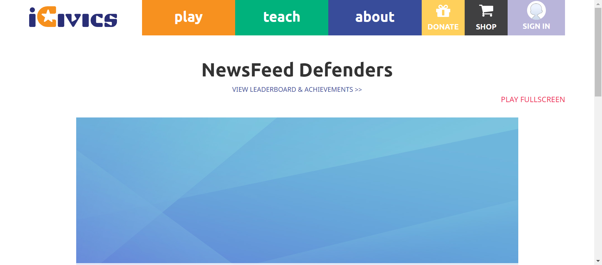 check_circle 10:03:51 PM The expected https://staging.d9.icivics.org/games/newsfeed-defenders url as same as the https://staging.d9.icivics.org/games/newsfeed-defenders actual url. 
check_circle 10:03:51 PM The expected text contains the actual NewsFeed Defenders 
check_circle 10:03:52 PM The mouse over by xpath : (//*[@title='Play Games'])[3] is performed. 
check_circle 10:03:52 PM The element [[ChromeDriver: chrome on WINDOWS (54651115c557455d04703564b865a54d)] -> xpath: (//li[contains(@class,'last win')]//a)[2]] is visible 
check_circle 10:03:52 PM The expected text contains the actual WIN THE WHITE HOUSE 
check_circle 10:04:19 PM The Element WIN THE WHITE HOUSE clicked 
check_circle 10:04:19 PM The expected https://staging.d9.icivics.org/games/win-white-house url as same as the https://staging.d9.icivics.org/games/win-white-house actual url. 
check_circle 10:04:19 PM The expected text contains the actual Win the White House 
check_circle 10:04:20 PM The mouse over by xpath : (//*[@title='Play Games'])[3] is performed. 
check_circle 10:04:20 PM The element [[ChromeDriver: chrome on WINDOWS (54651115c557455d04703564b865a54d)] -> xpath: (//li[@class='branches of power']/a)[2]] is visible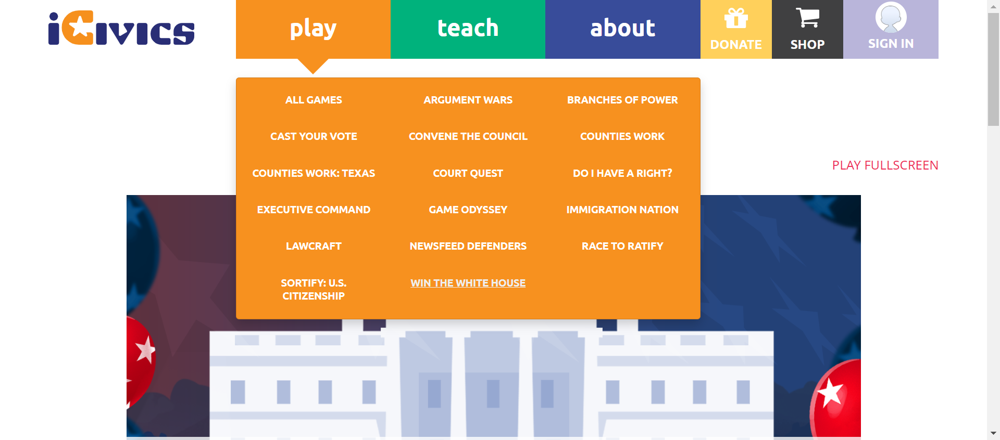 check_circle 10:04:20 PM The expected text contains the actual BRANCHES OF POWER 
check_circle 10:04:44 PM The Element BRANCHES OF POWER clicked 
check_circle 10:04:45 PM The expected https://staging.d9.icivics.org/games/branches-power url as same as the https://staging.d9.icivics.org/games/branches-power actual url. 
check_circle 10:04:45 PM The expected text contains the actual Branches of Power 
check_circle 10:04:45 PM The mouse over by xpath : (//*[@title='Play Games'])[3] is performed. 
check_circle 10:04:46 PM The element [[ChromeDriver: chrome on WINDOWS (54651115c557455d04703564b865a54d)] -> xpath: (//li[@class='counties work']/a)[2]] is visible 
check_circle 10:04:46 PM The expected text contains the actual COUNTIES WORK 
check_circle 10:04:50 PM The Element COUNTIES WORK clicked 
check_circle 10:04:50 PM The expected https://staging.d9.icivics.org/games/counties-work url as same as the https://staging.d9.icivics.org/games/counties-work actual url. 
check_circle 10:04:50 PM The expected text contains the actual Counties Work 
check_circle 10:04:51 PM The mouse over by xpath : (//*[@title='Play Games'])[3] is performed. 
check_circle 10:04:51 PM The element [[ChromeDriver: chrome on WINDOWS (54651115c557455d04703564b865a54d)] -> xpath: (//li[@class='do i have a right?'])[2]] is visible 
check_circle 10:04:51 PM The expected text contains the actual DO I HAVE A RIGHT? 
check_circle 10:05:11 PM The Element DO I HAVE A RIGHT? clicked 
check_circle 10:05:12 PM The expected https://staging.d9.icivics.org/games/do-i-have-right url as same as the https://staging.d9.icivics.org/games/do-i-have-right actual url. 
check_circle 10:05:12 PM The expected text contains the actual Do I Have a Right? 
check_circle 10:05:12 PM The mouse over by xpath : (//*[@title='Play Games'])[3] is performed. 
check_circle 10:05:13 PM The element [[ChromeDriver: chrome on WINDOWS (54651115c557455d04703564b865a54d)] -> xpath: (//li[@class='immigration nation']/a)[2]] is visible 
check_circle 10:05:13 PM The expected text contains the actual IMMIGRATION NATION 
check_circle 10:05:34 PM The Element IMMIGRATION NATION clicked 
check_circle 10:05:35 PM The expected https://staging.d9.icivics.org/games/immigration-nation url as same as the https://staging.d9.icivics.org/games/immigration-nation actual url. 
check_circle 10:05:35 PM The expected text contains the actual Immigration Nation 
check_circle 10:05:36 PM The mouse over by xpath : (//*[@title='Play Games'])[3] is performed. 
check_circle 10:05:36 PM The element [[ChromeDriver: chrome on WINDOWS (54651115c557455d04703564b865a54d)] -> xpath: (//li[@class='race to ratify']/a)[2]] is visible 
check_circle 10:05:36 PM The expected text contains the actual RACE TO RATIFY 
check_circle 10:06:03 PM The Element RACE TO RATIFY clicked 
check_circle 10:06:04 PM The expected https://staging.d9.icivics.org/games/race-ratify url as same as the https://staging.d9.icivics.org/games/race-ratify actual url. 
check_circle 10:06:04 PM The expected text contains the actual Race to Ratify 
check_circle 10:06:04 PM All links in the play dropdown is verified sucessfully 
-
C9- Do you see links to All Games, as well as each individual game in the submenu?
Jun 22, 2022 10:06:19 PM 0h 0m 12s+736ms passStatus Timestamp Details check_circle 10:06:14 PM playbutton submenu is display 
check_circle 10:06:15 PM playbutton submenu count is 17 
check_circle 10:06:15 PM Playbutton submenu is ALL GAMES 
check_circle 10:06:15 PM Playbutton submenu is ARGUMENT WARS 
check_circle 10:06:15 PM Playbutton submenu is BRANCHES OF POWER 
check_circle 10:06:16 PM Playbutton submenu is CAST YOUR VOTE 
check_circle 10:06:16 PM Playbutton submenu is CONVENE THE COUNCIL 
check_circle 10:06:16 PM Playbutton submenu is COUNTIES WORK 
check_circle 10:06:17 PM Playbutton submenu is COUNTIES WORK: TEXAS 
check_circle 10:06:17 PM Playbutton submenu is COURT QUEST 
check_circle 10:06:17 PM Playbutton submenu is DO I HAVE A RIGHT? 
check_circle 10:06:17 PM Playbutton submenu is EXECUTIVE COMMAND 
check_circle 10:06:18 PM Playbutton submenu is GAME ODYSSEY 
check_circle 10:06:18 PM Playbutton submenu is IMMIGRATION NATION 
check_circle 10:06:18 PM Playbutton submenu is LAWCRAFT 
check_circle 10:06:18 PM Playbutton submenu is NEWSFEED DEFENDERS 
check_circle 10:06:19 PM Playbutton submenu is RACE TO RATIFY 
check_circle 10:06:19 PM Playbutton submenu is SORTIFY: U.S. CITIZENSHIP 
check_circle 10:06:19 PM Playbutton submenu is WIN THE WHITE HOUSE 
-
C12- If you are viewing one of the pages in the Play submenu, is that page underlined in the submenu?
Jun 22, 2022 10:06:40 PM 0h 0m 19s+328ms passStatus Timestamp Details check_circle 10:06:29 PM playbutton submenu is display 
check_circle 10:06:36 PM The Element play clicked 
check_circle 10:06:39 PM Selected'ALLGAMES'page is underlined 
check_circle 10:06:40 PM The Element play clicked 
check_circle 10:06:40 PM On clicking Playbutton again submenu is close 
-
C13- When you select Play again while the submenu is open, does the submenu close?
Jun 22, 2022 10:06:47 PM 0h 0m 5s+238ms passStatus Timestamp Details check_circle 10:06:46 PM playbutton submenu is display 
check_circle 10:06:47 PM The Element play clicked 
check_circle 10:06:47 PM On clicking Playbutton again submenu is close 
-
info_outline
check_circle
cancel
cancel
error
warning
redo
clear
Dashboard
Tests
78
Steps
627
Start
Jun 22, 2022 09:58:45 PM
End
Jun 22, 2022 10:06:47 PM
Time Taken
0h 8m 2s+686ms